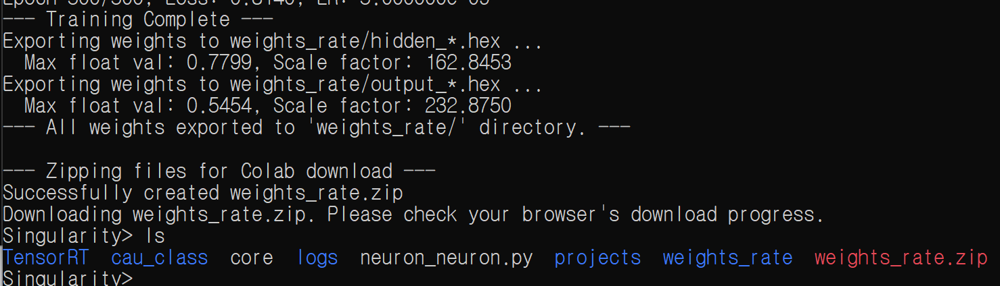

3. 입력 조건별 시뮬레이션과 구현 결과
제어 회로의 검증은 “파형이 나왔다”는 사실만으로 끝나지 않습니다. 입력 spike가 의도한 횟수로 생성되는지, LIF 상태가 clock 순서에 맞게 갱신되는지, 네 방향 출력이 중앙 방향을 가리키는지, 반응량이 목표를 지나치지는 않는지를 나누어 살펴봐야 합니다. 프로젝트에서는 위치만 전달하는 one-shot 실험을 기준점으로 삼은 뒤, 무게를 spike rate에 반영한 두 번째 실험을 추가했습니다. 이어서 대표 좌표의 방향별 spike 수, 합성 자원, Vivado 전력 추정치를 정리했습니다. 이 글에서는 각 결과가 실제로 뒷받침하는 범위와 아직 물리 장치에서 확인하지 않은 범위를 함께 기록합니다.
검증 구성
검증 자료는 네 층으로 나뉩니다. Testbench는 좌표와 digital weight가 회로에 들어가는 조건을 고정하고, 파형은 입력·막전위·출력 spike의 시간 순서를 보여줍니다. 방향별 count와 최종 좌표 표는 제어 모델의 반응을 요약하며, Vivado 보고서는 합성된 논리와 추정 전력의 구성을 보여줍니다. 최종 실험 묶음에는 one-shot 버전과 rate-encoding 버전의 RTL·testbench·weight가 구분되어 있어 입력 방식이 바뀐 지점을 추적할 수 있습니다. 물리 보드의 폐루프 제어는 이 검증 범위에 포함되지 않습니다.
- 기능
- 100 time-step Verilog simulation
- 입력
- one-shot → 무게 반영 rate encoding
- 합성
- LUT · FF · I/O 사용량
- 전력
- Vivado 추정, 보드 실측 아님
입력 조건
검증은 먼저 좌표와 네 방향 출력의 기본 연결을 확인하고, 이후 무게 정보를
입력에 추가하는 순서로 진행했습니다. 실험 1은 현재 좌표를 한 번의 spike로
전달해 weight 연결과 출력 방향을 확인하는 기준점입니다. 실험 2는 같은
위치 표현에 ball_weight를 추가하고, 입력 spike의 개수를
무게에 따라 바꿔 시간축 자극에 대한 반응을 비교합니다.
| 실험 | 입력 표현 | 확인한 질문 | 주요 파라미터 |
|---|---|---|---|
| 1 | 위치 one-shot | 좌표 부호와 네 방향 출력이 의도대로 연결되는가 | Threshold 40 · Leak shift 4 |
| 2 | 무게 반영 rate encoding | 무게 변화가 spike 밀도와 제어 반응에 반영되는가 | Threshold 300 · Leak shift 6 |
두 실험은 입력 방식뿐 아니라 threshold와 leak 조건도 다르다. 결과는 무게 입력 하나의 영향으로 분해되지 않으며, rate encoding 경로의 기능 동작을 보여주는 자료이다.
| 검증 자료 | 확인 대상 | 판단 가능한 범위 |
|---|---|---|
| Testbench 입력 | 좌표, start, digital weight | 의도한 조건이 RTL에 전달되는지 확인 |
| 내부 파형 | input spike, membrane, threshold, output spike | time step과 뉴런 상태 변화 확인 |
| 방향별 count | +X·−X·+Y·−Y 누적값 | 중앙 방향과 반대 방향의 반응 비교 |
| 좌표 갱신 모델 | spike count를 이동 칸 수로 적용 | 디지털 제어 규칙 안의 최종 위치 계산 |
학습 결과를 RTL 입력으로 옮기는 과정
계층형 99→32→4 실험망의 연결 가중치는 software에서 학습한 뒤 정수
.hex 파일로 변환했습니다. 은닉층과 출력층의 최대 절댓값을
확인해 정수 범위에 맞는 scale factor를 적용하고, one-shot 실험과
rate-encoding 실험의 weight 묶음은 별도로 구성했습니다. RTL testbench는 이 파일을
읽어 동일한 입력 좌표에서 가중합과 spike count를 계산합니다. 즉 학습과
회로 실행이 동시에 일어나는 online-learning 구조가 아니라, 학습된
파라미터를 고정해 사용하는 offline inference 구조입니다.

| 단계 | 산출물 | 검증 질문 |
|---|---|---|
| Software 학습 | 은닉층·출력층 실수 weight | 대표 위치에서 중앙 방향 반응을 학습했는가 |
| 정수 변환 | hidden_*.hex, output_*.hex | 정수 범위에서 부호와 상대 크기가 유지되는가 |
| RTL 로드 | Testbench가 읽는 weight memory | 파일 순서와 뉴런 연결 순서가 일치하는가 |
| 100 time steps | 방향별 spike count | 입력 방식에 따른 발화 차이가 나타나는가 |
최종 발표자료도 offline learning을 한계로 명시한다. 실시간 센서 값으로 FPGA 내부 weight를 갱신하거나, 실제 공의 움직임을 보고 즉시 재학습하는 회로는 구현 범위가 아니다.
무게별 simulation 결과
15g에는 digital weight 123, 30g에는 255를 사용한다. 표는 최종 발표자료의 열 개 결과를 제시한다. 15g 조건은 다섯 초기 위치 중 세 경우에서 (0,0)에 도달하며, 30g 조건은 더 많은 spike와 함께 overshoot를 보인다.
표의 오차는 최종 좌표의 |x|+|y|로 읽을 수 있다. 값이 0이면
이산 좌표 모델에서 중앙에 도달한 것이고, 값이 클수록 중앙에서 더 멀리
남아 있다. 따라서 방향이 맞게 나온 것과 정확히 중앙에서 멈춘 것은
별개의 평가 항목이다. 예를 들어 15g의 (3,3) 입력은 −X와 −Y 방향을
올바르게 선택하지만 각 축에서 한 칸만 이동해 (2,2)에 남는다.
| 무게 | Weight | 초기 위치 | 방향별 spike | 최종 위치 | 오차 |
|---|---|---|---|---|---|
| 15g | 123 | (4, 4) | +X 0 · −X 4 · +Y 0 · −Y 4 | (0, 0) | 0 |
| 15g | 123 | (3, 3) | +X 0 · −X 1 · +Y 0 · −Y 1 | (2, 2) | 4 |
| 15g | 123 | (2, 2) | +X 0 · −X 1 · +Y 0 · −Y 1 | (1, 1) | 2 |
| 15g | 123 | (1, 1) | +X 0 · −X 1 · +Y 0 · −Y 1 | (0, 0) | 0 |
| 15g | 123 | (0, 0) | +X 0 · −X 0 · +Y 0 · −Y 0 | (0, 0) | 0 |
| 30g | 255 | (−4, −4) | +X 4 · −X 1 · +Y 4 · −Y 0 | (−1, 0) | 1 |
| 30g | 255 | (−3, −3) | +X 4 · −X 0 · +Y 4 · −Y 0 | (1, 1) | 2 |
| 30g | 255 | (−2, −2) | +X 3 · −X 0 · +Y 3 · −Y 0 | (1, 1) | 2 |
| 30g | 255 | (−1, −1) | +X 1 · −X 1 · +Y 2 · −Y 0 | (−1, 1) | 2 |
| 30g | 255 | (0, 0) | +X 0 · −X 0 · +Y 1 · −Y 0 | (0, 1) | 1 |

30g 조건은 입력 rate가 커지면 출력 반응도 커진다는 점을 보여주지만, 중앙 수렴 성능은 오히려 낮아집니다. (−3,−3)과 (−2,−2)에서는 각 축의 +방향 spike가 필요한 거리보다 많아 (1,1)로 넘어가고, 중앙 (0,0)에서도 +Y spike가 발생해 (0,1)로 이동합니다. 이는 무게 정보를 입력에 포함하는 것만으로 안정적인 제어가 완성되지는 않으며, 위치에 가까워질수록 gain을 줄이는 규칙이나 출력 feedback을 추가해야 함을 보여줍니다.
열 개 결과는 모든 1~30g 무게와 99개 위치를 전수 조사한 정확도 지표가 아니다. 두 대표 무게와 일부 초기 좌표에서 rate-encoding 반응을 확인한 기능 실험으로 해석한다.
합성 자원
최종 발표자료의 합성 표에는 LUT 10개, FF 41개, BRAM과 DSP 0개가 기록된다. I/O는 83개이며 장치의 I/O 자원 대부분을 사용한다. 논리 자원과 I/O 사용량은 서로 다른 항목으로 표시한다.
LUT와 FF는 입력 부호 분리, LIF 상태, spike count와 제어 레지스터에 사용됩니다. BRAM과 DSP가 0인 이유는 이 공개 범위의 상태가 작은 register로 구성되고 전용 곱셈 배열을 사용하지 않기 때문입니다. 반면 top-level에 위치·속도·방향 신호를 넓게 노출해 I/O 사용량은 높습니다. 계산 로직이 작다는 사실과 장치 핀 사용률이 높다는 사실은 동시에 성립합니다.

발표 본문에는 “약 20.78% 자원”이라는 요약 문장도 존재하지만, 세부 utilization 표의 LUT·FF·I/O 비율과 동일한 기준으로 재현되지 않는다. 이 문서에서는 항목별 표에 직접 적힌 수치를 사용하고, 서로 성격이 다른 logic 자원과 I/O 비율을 하나의 사용률로 합치지 않는다.
Vivado 전력 추정
총 전력은 2.302W, dynamic power는 2.165W, static power는 0.137W이다. dynamic power 중 I/O는 1.968W를 차지한다. 수치는 보드 실측이 아닌 입력 activity와 구현 조건에 따른 Vivado 추정값이다.
dynamic 94%라는 비율만 보면 뉴런 계산이 많은 전력을 사용한 것처럼 보일 수 있지만, 세부 항목에서는 I/O가 dynamic power의 약 90%를 차지합니다. 즉 이 결과는 LIF 산술 자체보다 넓은 top-level 신호의 toggle 가정에 크게 영향을 받습니다. 따라서 2.302W를 SNN core의 고유 소비전력이나 event-driven 구조의 에너지 효율로 해석하는 것은 적절하지 않습니다.

전력 비교를 위해서는 동일한 보드·clock·I/O constraint·toggle activity를 사용한 기준 설계가 필요하다. 현재 자료는 구현 결과의 전력 분포를 읽는 근거이며, 다른 제어기보다 절대적으로 저전력이라는 비교 근거는 아니다.
검증 단계와 결론
| 단계 | 현재 확보된 근거 | 아직 확인하지 않은 항목 |
|---|---|---|
| 입력 부호화 | one-shot·rate encoder RTL과 testbench | 실제 무게 센서의 교정 곡선 |
| 뉴런 연산 | 100 time-step 기능 simulation | 모든 좌표·무게 조합의 전수 검증 |
| 출력 해석 | 방향별 spike count와 좌표 갱신 | PWM·motor driver·기구부 응답 |
| FPGA 구현 | 합성 자원표와 Vivado 전력 추정 | 확정 board part의 timing·bitstream·실측 전력 |
| 폐루프 제어 | 디지털 이동 모델 | 카메라 feedback과 실제 공의 중앙 유지 |
현재 결과가 뒷받침하는 결론은 위치와 무게를 spike 입력으로 표현하고, LIF 네트워크가 네 방향 제어 이벤트를 생성하며, 대표 조건에서 weight에 따른 반응 차이가 나타난다는 것입니다. 실제 Ball Balancing 장치가 중앙 반경 1cm 안에서 안정화되었다는 결론은 이 자료만으로 뒷받침되지 않습니다.
추가 검증 항목
무거운 공의 overshoot
무게별 rate, threshold, leak, 출력 scaling을 공동 탐색하고 중앙 근처에서는 출력 gain을 줄이는 조건을 검증한다.
좌표 추정 오차
좌표 오차와 frame 지연을 입력해, 목표 반경 1cm 안에서 방향 출력이 진동하지 않는지 확인한다.
spike와 실제 구동량
1-bit 방향 이벤트를 PWM·pulse width로 변환하고 반대 축 actuator의 복원 동작을 정의한다.
모델·RTL·보드 결과 비교
동일한 입력을 software model, RTL simulation, FPGA, 실제 장치에 넣고 최초 차이 지점을 단계별로 기록한다.
가장 먼저 필요한 후속 실험은 99개 위치와 여러 무게를 자동으로 순회하는 regression test이다. 그다음 센서 모델과 actuator 모델을 붙여 closed-loop simulation을 만들고, 마지막에 실제 보드에서 같은 평가 지표를 사용해야 입력 부호화의 장점과 제어 안정성을 분리해 판단할 수 있다.